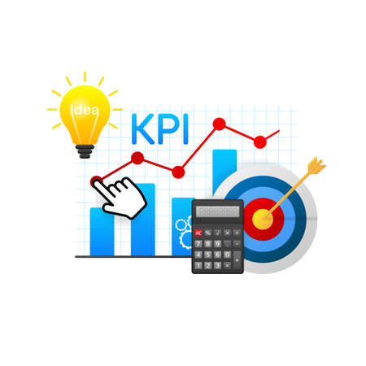

My Projects
Below are some of the exciting projects I've worked on, showcasing my skills in data analysis, visualization, and machine learning.

Sales Dashboard
An interactive Tableau dashboard analyzing sales trends and KPIs across regions, products, and time periods.
View Project
Customer Churn Prediction
Built a machine learning model to predict customer churn, achieving 85% accuracy using Python and scikit-learn.
View Project
Marketing Campaign Analysis
Used Power BI to analyze marketing campaigns, optimizing ROI by identifying high-performing channels.
View Project

Inventory Optimization
Developed a multi-echelon inventory optimization model, reducing excess inventory by 15% for a Fortune 500 client.
View Project